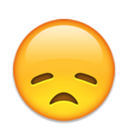
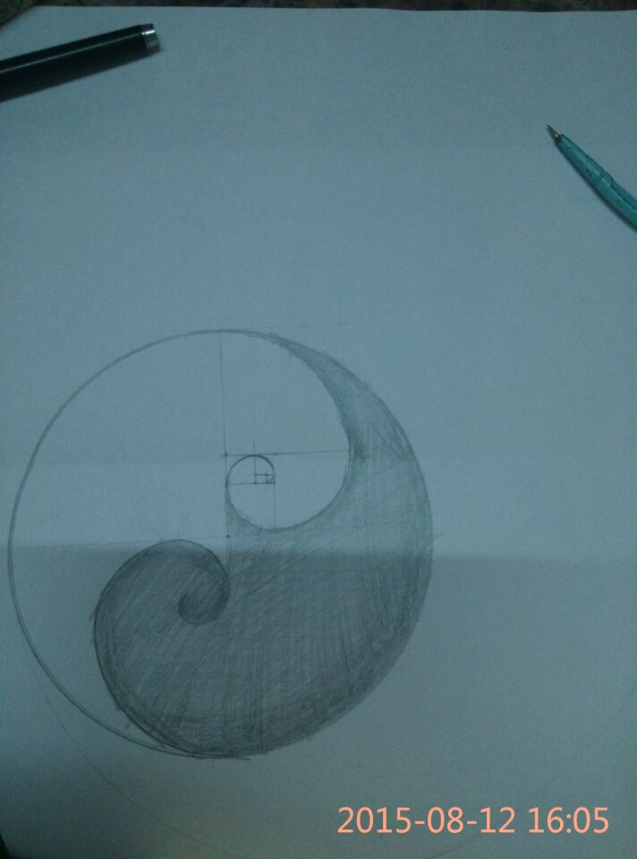
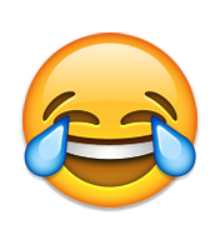
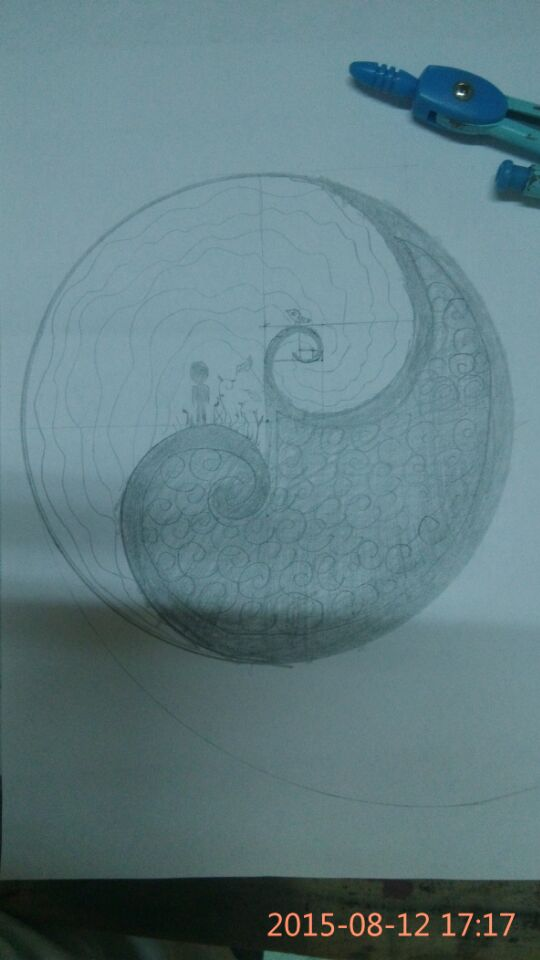

设计者语
斐波那契螺旋线，也称“黄金螺旋线”，是根据斐波那契数列画出来的螺旋曲线，自然界中存在许多斐波那契螺旋线的图案，是自然界最完美的经典黄金比例
两个斐线加起来像太极
加上颜色像地球
人类小
微不足道
人，草，鸟，
说白了就是顺手画着看着好看
人是背面剪影朝向广阔的天空
虽然微不足道但也能看到希望，就是光
说白了就是加上好看
然后我们往主题上扯
这个世界上发生的一切或许是由一个个定律确定
这些定律在目前的认知范围内是不会随人类意志转移的
发生过的就是历史
但历史是有规律的
会重演
但又不完全相同
就好象两个斐线周围的东西不同
我说完了
你自己整理吧


幕后故事
15年6月，周应我之邀，答应在暑期为我设计一个logo。
logo的主题是时间：时间之河流、时间之波浪、时间之脉冲。分别对应着历史不会静止（河流），但是一直在重演（波浪），却总也不会相同（脉冲）。
创作过程也不算太容易，开始时先是看上了这货：
可以寓意波浪，但是河流和脉冲怎么办呢？于是想到了这：

彗星呢！
 寓意脉冲再合适不过了。恩，还有星轨，可以拿来当河流。这俩都是蛮不错的天文奇观嘛.
寓意脉冲再合适不过了。恩，还有星轨，可以拿来当河流。这俩都是蛮不错的天文奇观嘛.然后就变成了这样:
可是！你能想象浅色主题搭配暗色背景多么坑爹！主题可是有三个哦：衔尾蛇、星轨和彗星。

 这几个看起来显然不搭配呀。
这几个看起来显然不搭配呀。解决方法就是————重构。啥寓意我也不要了。先前周说可手绘，那就手绘个吧。于是乎：
“我又没思路了，接下来加啥好呢？” “斐波那契等着你”
“看起来好像个太极啊～～只要移一个三角秒成太极
 ,我感受到了斐老和中国阴阳的和谐。”
,我感受到了斐老和中国阴阳的和谐。”“你干脆画个日晷上去吧”
...
“有心情就填充个螺旋线上去”
“所以填一堆斐线
 ”
”...
“要是我自己用我就这么打线稿～～”
“你可以拿给XX看，看它怎么打死你——密集恐惧症”
...
于是乎就成了如此模样。
——于2015年9月4日